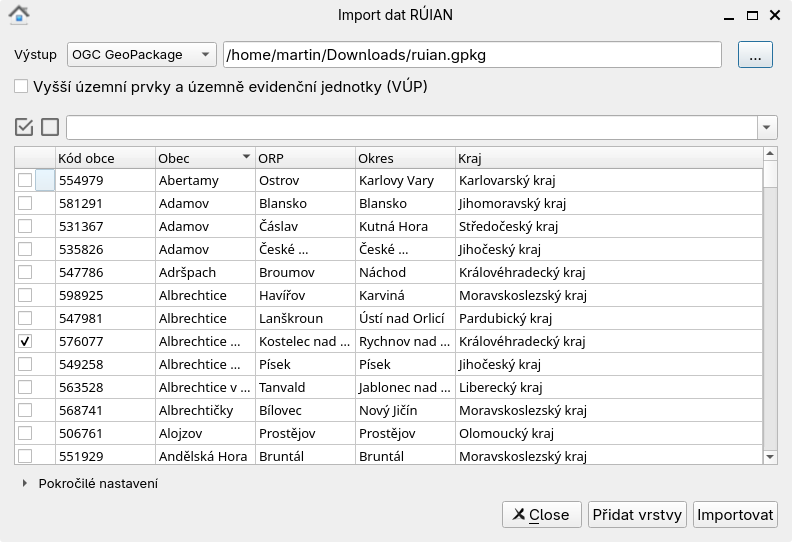
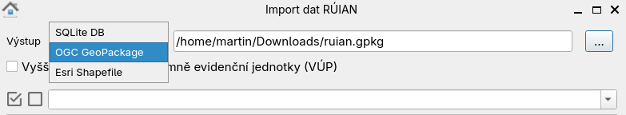
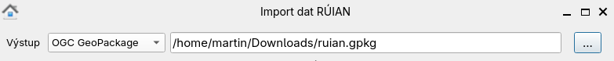
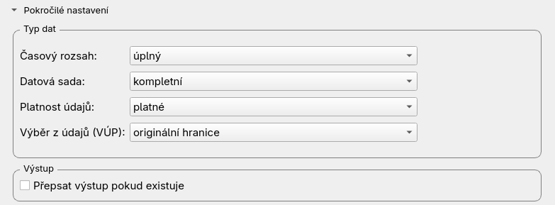
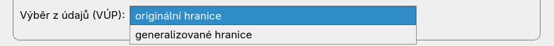
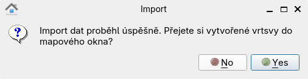
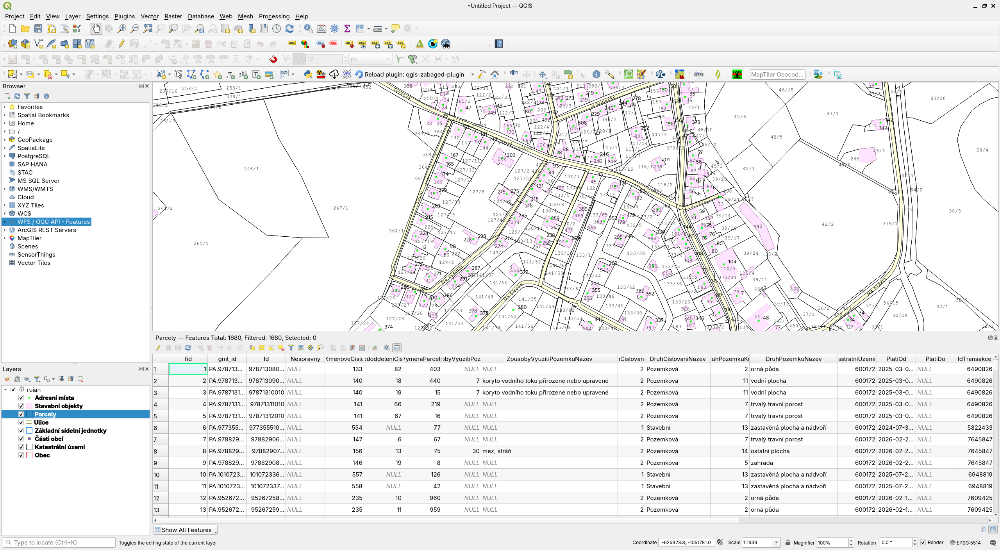

Návod k použití¶
Vybereme obec či obce, které chceme stáhnout:
{kind=link}

Pokud je zaškrtnuto Vyšší uzemní prvky (VUP), budou staženy i
vyšší územní prvky (v hierarchii nad obcemi). Lze je stahovat
samostatně nebo i se zvolenou obcí.
Důležité
Je vhodné zvolit menší objem dat maximálně ve velikosti okresu. Zásuvný modul není navržen pro stahování většího objemu dat.
{kind=link}
V dalším kroku zvolíme formát výstupního souboru:
{kind=link}

Poznámka
V současné době zásuvný modul podporuje tři výstupní formáty:
Podpora pro další formáty může být přidána na vyžádání.
Definujeme cestu k výstupnímu souboru, kam se uloží stažená data.
{kind=link}

Možnost dalšího nastavení nalezneme pod rozbalovacím seznamem Pokročilé nastavení.
{kind=link}

Tady nalezneme možnost výběru generalizovaných hranic dat VÚP.
{kind=link}

Data můžeme v QGISu rovnou zobrazit:
{kind=link}

Příklad vizualizace stažených dat:
{kind=link}

Poznámka
Styly zobrazovaných prvků jsou téměř totožné jako na vizualizaci přes vzdálený přístup od ČÚZK.
Poznámka
Od měřítka 1:10000 se zobrazují ulice, adresní místa, parcely a stavební objekty, od 1:100000 katastrální území a základní sídelní jednotky, od 1:200000 městské obvody a části a části obcí a od 1:500000 obce a městské a správní obvody Prahy. U všech prvků je též zobrazeno jejich jméno nebo číslo.
Tip
Již stažená data lze načíst z disku po zadání cesty k souboru a stisknutí tlačítka Přidat vrtsvy.